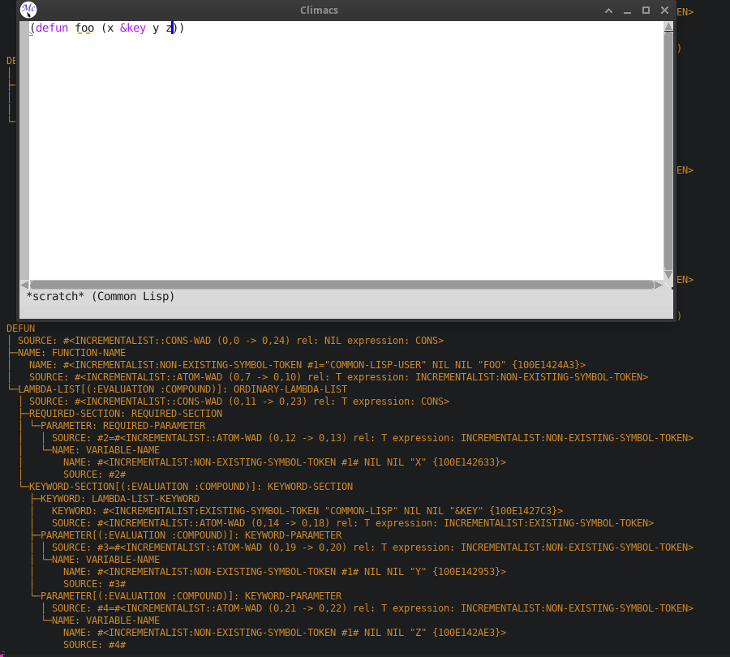
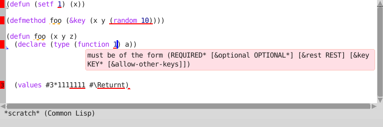
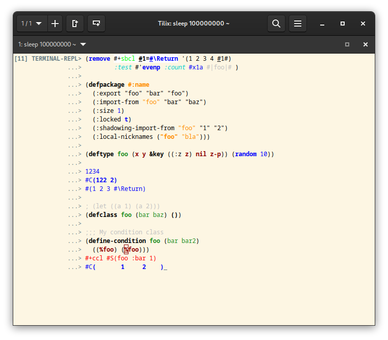

Introduction
This page contains some random stuff related to the text
editing and Common Lisp editing stuff we have been
doing. Software demonstrated here (Note that not all of
the features shown here are included in the publicly
available versions of the software):
Frontend independent
- Cluffer Library
- Text Editing Library
- Eclector Library
- Concrete Syntax Tree Library
- S-expression-syntax Library
- Incrementalist Library
CLIM frontend
Documentation Drafts
Those are obsolete but are preserved so that links don't break:
Please use the actual documentation instead.Demos
Cluffer
Cluffer snapshots for undo.
Cluffer undo experiment.
Second Climacs

AST
from parsing
s-expressions represented
as Concrete
Syntax Tree.

S-expression-level errors.
Gutter area and CLIM presentations within buffer content.
Filling (word wrapping) and multiple cursors.
Search and replace experiment.
Other Frontends
These alternate frontends use mostly the same software stack as the examples shown above. The most notable difference is that the syntax (or rather semantic) highlighting is further along:

Terminal REPL with editing and syntax highlighting.
S-expression parsing experiments.